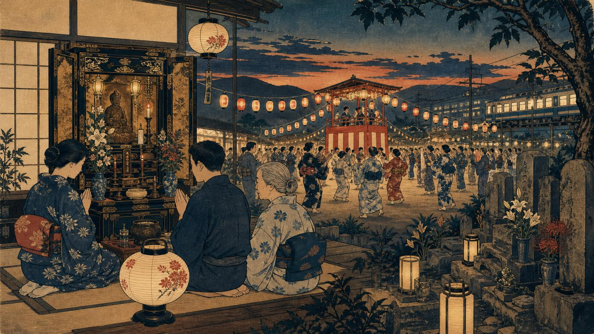

O Obon é uma das épocas em que o Japão mais claramente aproxima memória familiar, tradição religiosa, viagem doméstica e vida urbana. Para quem mora no país, ele aparece em rituais discretos dentro de casa, visitas a túmulos, festivais de dança, lanternas, férias de empresas e estações mais cheias.

O Obon tem raízes budistas e práticas familiares japonesas voltadas à lembrança dos ancestrais. Em muitas casas, famílias recebem simbolicamente os espíritos, cuidam do altar doméstico, visitam sepulturas e participam de eventos locais. A forma exata varia por região, templo, família e calendário local.
Quando acontece
O período mais conhecido ocorre em meados de agosto, mas não existe uma única data nacional prática para todos os lugares. Algumas regiões mantêm celebrações em julho; outras seguem agosto; Okinawa e comunidades locais podem usar calendário lunar. Por isso, quem planeja viagem, folga ou participação em festival deve confirmar a data do município, templo ou bairro.
Mukaebi, okuribi e lanternas
Em tradições familiares, o mukaebi simboliza a recepção dos ancestrais, enquanto o okuribi marca a despedida. Lanternas, pequenas oferendas e visitas ao túmulo ajudam a dar forma visível a uma relação que é ao mesmo tempo espiritual, familiar e comunitária.
Não é necessário transformar cada gesto em espetáculo. Para brasileiros no Japão, a melhor postura é observar com respeito, perguntar quando houver intimidade e lembrar que muitos ritos pertencem à vida privada das famílias.
Bon Odori e comunidade
O Bon Odori é a face pública mais reconhecível do Obon: danças em círculo, músicas locais, barracas, yukata, crianças, idosos e vizinhos ocupando praças, escolas ou áreas de templo. Em alguns lugares, o festival é pequeno e comunitário; em outros, recebe visitantes de fora.
A dança não é apenas entretenimento. Ela preserva memória local, formas de convivência e modos de transmissão cultural. A Agência para Assuntos Culturais do Japão reconhece várias danças folclóricas e eventos regionais como patrimônio cultural imaterial, o que mostra a importância dessas práticas para além do turismo.
O país em movimento
Obon também mexe com transporte e trabalho. Empresas podem fechar por alguns dias, famílias viajam para a cidade natal, rodovias e shinkansen ficam mais disputados e atrações turísticas ganham movimento. Esse efeito não é igual em todo o país, mas meados de agosto costuma exigir reserva, paciência e checagem de horários.
Para quem trabalha no Japão, vale confirmar escala da empresa, funcionamento de repartições, coleta de lixo, clínicas e comércio local. Para quem viaja, compre passagem com antecedência e monitore alertas de calor, tufões e lotação.
Como participar com respeito
Em Bon Odori aberto ao público, observe o fluxo antes de entrar na roda, siga a dança local, não bloqueie passagem para fotografar e evite tratar túmulos, altares ou famílias em luto como cenário. Se houver placa pedindo silêncio ou restrição de imagem, respeite.
O Obon ensina algo importante sobre o Japão cotidiano: tradição não é só templo famoso ou imagem turística. Muitas vezes ela está no retorno à família, na limpeza do túmulo, na dança do bairro e no trem cheio de gente voltando para casa.
Aviso de atualização
Texto revisado em 11 de agosto de 2026. Datas, festivais, transporte e regras locais mudam por região, clima, calendário e organização. Confirme informações no município, templo, operadora de transporte ou site oficial do evento antes de planejar deslocamento.
Fontes consultadas
- Japan Travel/JNTO: Japan in August
- Japan Travel/JNTO: local festivals and Bon Odori participation
- Japan Travel/JNTO: Awa Odori Festival
- Agency for Cultural Affairs, Government of Japan